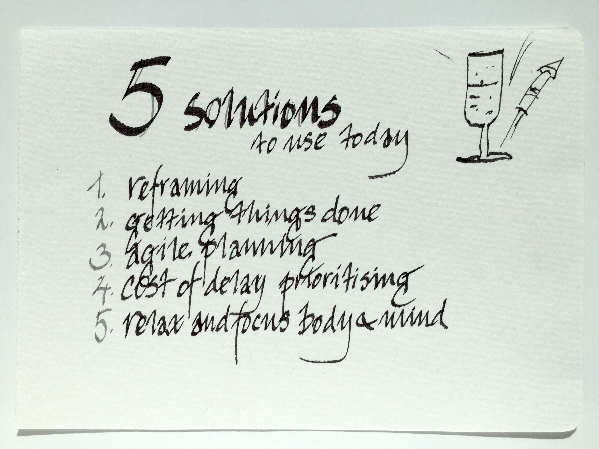
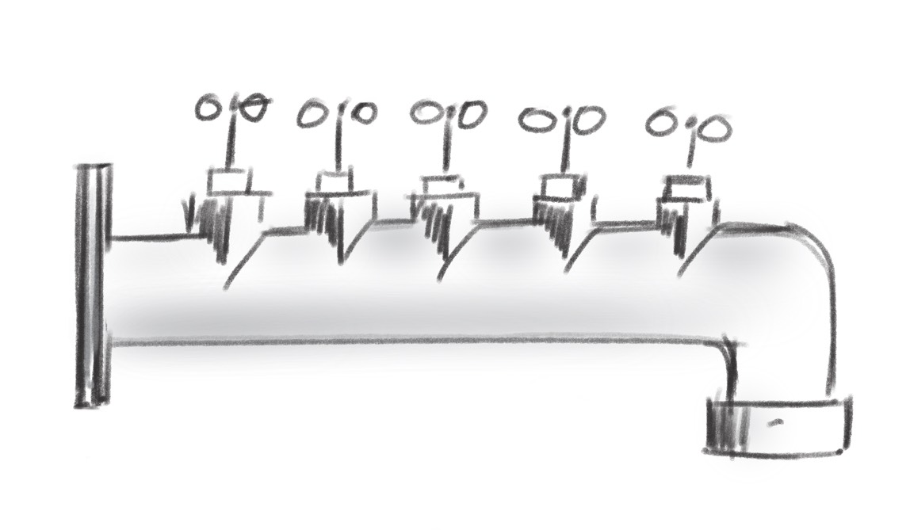
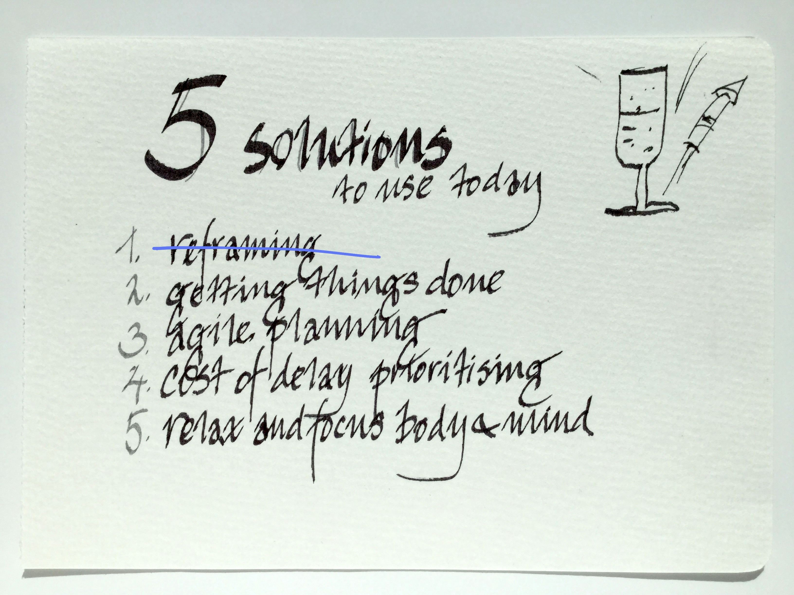
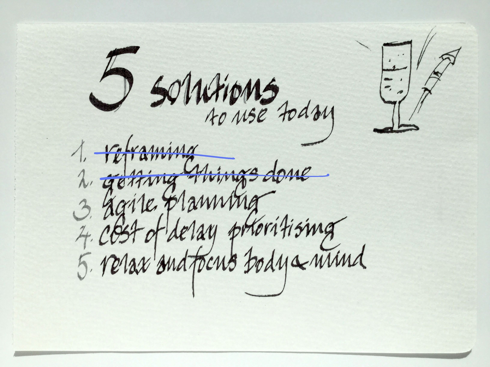
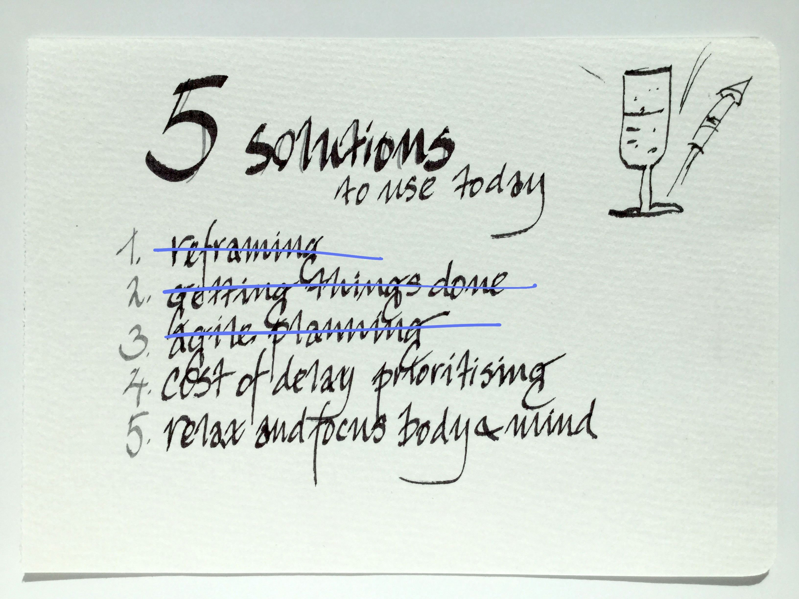
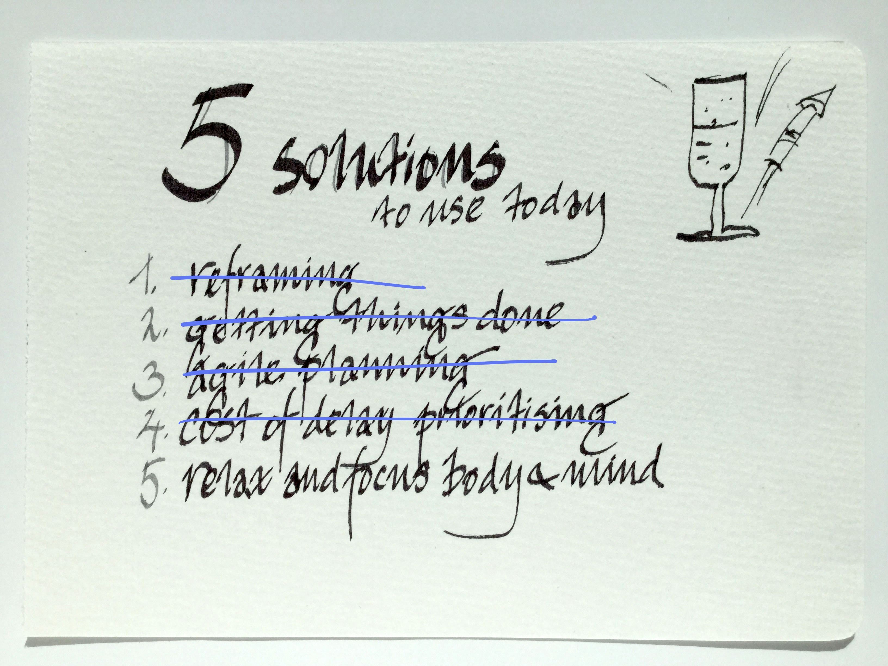
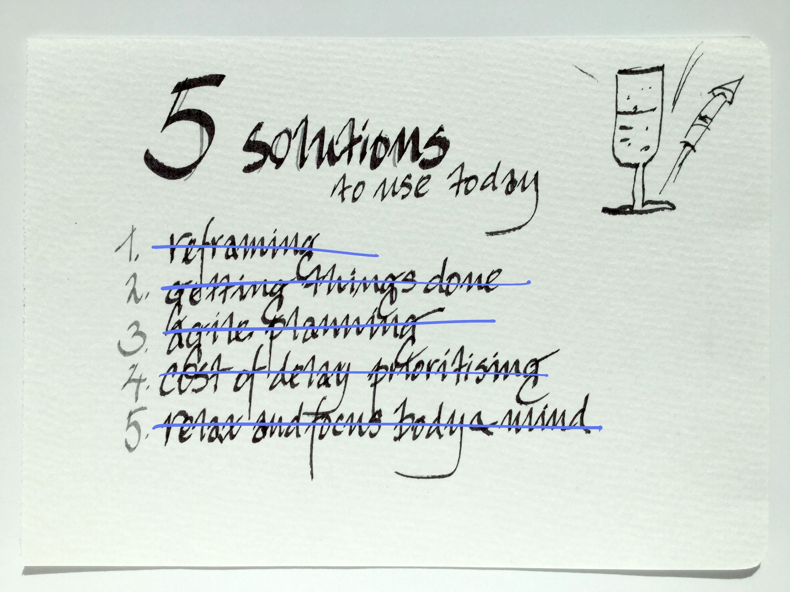

Being Lean
5 techniques to try individually today!
written by Johan Frisk© for LeanBee

this is the total process, let's go through it step-by-step

note: to get full effect... use all of the techniques!
How to use this presentation
There are five steps to the process, they are all illustrated by a drawing. Use
them to try all the steps at once, or one at a time.
Navigate in these four ways:
- If you go horisonally to the right you will see the eight steps in sequence.
- If you go down on any step you will find a written instruction and,
- if you hit 'esc' you will see a navigational view of all the slides.
- If you press 's' anywhere you come to the presenter's window.
Where should you do the work?
- Step 1 - should be done first thing in the morning, while getting ready for the day.
- Step 2 - is the first thing to do sitting down at your desk.
- Step 3 - is done in the office right before starting the work day.
- Step 4 - is about prioritising and should be kept in mind at all times.
- Step 5 - is how to concentrate just before any important task

Second step: Getting things done!

Third step: Agile planning (Kanban)

Fourth step: Prioritise with 'Cost of Delay'

Fifth step: Relax and focus before acting

That's all there is to it! and don't forget...
remember: to get full effect... use all of the techniques!